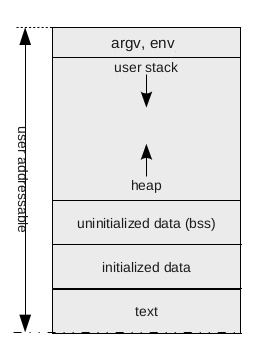

class: center, middle, title-slide ## CSCI 340 Operating Systems <br> ## Chapter 3: Processes .author[ Stewart Weiss<br> ] .license[ Copyright 2020 Stewart Weiss. Unless noted otherwise all content is released under a [Creative Commons Attribution-ShareAlike 4.0 International License](https://creativecommons.org/licenses/by-sa/4.0/). Background image: roof of the EPIC Museum, Dublin, by Stewart Weiss. ] --- name: cc-notice template: default layout: true .bottom-left[© Stewart Weiss. CC-BY-SA.] --- name: tinted-slide template: cc-notice layout: true class: tinted --- name:toc ### Table of Contents [About This Chapter](#summary)<br> [Chapter Objectives](#objectives)<br> [Background](#process-background)<br> [The Process Abstraction](#process-abstraction)<br> [Processes, Concretely](#process-concretely)<br> [The Memory Image](#mem-image)<br> [From File to Process](#process-creation)<br> [Mapping the File to Memory](#elf-to-mem)<br> [Process Context](#process-context)<br> [Process Execution State](#process-context-2)<br> [Process State Transitions](#state-transitions)<br> [The Process Control Block](#pcb)<br> [The Contents of a PCB](#pcb-contents)<br> [The Linux .fixed[task_struct]](#pcb-linux)<br> [What is Scheduling?](#scheduling-overview)<br> [Process Scheduling](#scheduling)<br> [Types of Process Scheduling](#scheduling-2)<br> [Medium-Term Scheduling](#medium-term-scheduler)<br> [The Swapper](#medium-term-scheduler-2)<br> [The Short-Term, or CPU, Scheduler](#process-scheduler-1)<br> [Queuing of Processes](#process-queues)<br> --- ### Table of Contents [Context Switch](#context-switch)<br> [Exceptions and Interrupts Revisited](#exceptions-revisited)<br> [Interrupts, System Calls, and Context Switches](#mode-changes)<br> [Process Creation Terminology](#process-creation-1)<br> [Viewing the Process Tree](#process-tree)<br> [Process Creation](#process-creation-2)<br> [The Magic of .fixedblue[fork()]](#fork)<br> [The .fixedblue[fork] System Call](#fork-2)<br> [A .fixedblue[fork()] Example](#fork-demo)<br> [Overhead of .fixedblue[fork()]](#fork-overhead)<br> [The UNIX .fixedblue[execve] System Call](#exec-calls)<br> [Process Termination](#process-termination)<br> [The .fixedblue[wait()] System Call](#wait-call)<br> [Process Termination Issues](#process-termination-2)<br> [How a Shell Works](#shell-example)<br> [Concurrency](#concurrency)<br> [Cooperating Processes](#cooperating-procs)<br> [Reasons for Processes to Cooperate](#cooperating-procs-2)<br> [Example: The Chrome Browser](#browser-example)<br> [Interprocess Communication Methods](#ipc-types)<br> [The Shared Memory Model](#shared-mem-model)<br> [Shared Memory Support in Linux](#shared-mem-support)<br> [The Message-Passing Model](#message-passing-1)<br> --- ### Table of Contents [Message Passing Implementation](#message-passing-2)<br> [IPC Models Visualized](#ipc-types-2)<br> [Issues In Message Passing](#message-passing-issues)<br> [Direct Communication](#direct-communication)<br> [Indirect Communication](#indirect-communication)<br> [Synchronous Operations](#message-passing-synch)<br> [Asynchronous Operations](#message-passing-asynch)<br> [Buffering in Message-Passing](#buffering)<br> [Pipes](#pipes-1)<br> [Pipes Named and Unnamed](#pipes-2)<br> [Unnamed Pipes](#unnamed-pipes)<br> [Using Unnamed Pipes](#unamed-pipes-2)<br> [Drawbacks of Unnamed Pipes](#unnamed-pipes-3)<br> [Named Pipes](#named-pipes)<br> [Creating and Using Named Pipes](#name-pipes-2)<br> [Producer Consumer Problem](#producer-consumer-problem)<br> [Producer Consumer Examples](#prod-cons-2)<br> [Producer Consumer Problem: Shared Memory](#shared-mem-prod-consumer)<br> [Shared Memory Producer Code](#shared-mem-producer-1)<br> [Shared Memory Consumer Code](#shared-mem-consumer-1)<br> [Correctness of Shared Memory Solution](#shared-mem-prod-consumer-2)<br> [Producer Consumer Problem: Message-Passing](#message-passing-prod-cons)<br> [Message-Passing Producer Code](#message-passing-producer-1)<br> --- ### Table of Contents [Conclusion](#conclusion)<br> [References](#references)<br> <!--TOC_END--> --- name: summary ### About This Chapter In Chapter 1, one of the first statements made about operating systems was that, > "_the operating system alone must enable and control the execution of > all other software on the computer._" -- It was also pointed out that among the most common and important services provided by operating systems are * _loading and executing programs, providing synchronization, and inter-process communication._ -- Central to these ideas is the concept of a running program, otherwise known as a .bluebold[process]. .redbold[The most fundamental part of the study of operating systems is the study of processes]. Studying processes is the purpose of this chapter, which covers the following topics: - Process concept and representation - Process scheduling - Operations on processes - Inter-process communication (IPC) - IPC in shared-memory computer systems - IPC in message-passing computer systems - Examples of specific IPC systems --- name: objectives ### Chapter Objectives You should be able to - identify the individual components of a process and explain how they are represented in an operating system. - describe the disk representation of a process and the typical memory image of a process. - explain the various ways in which processes are scheduled in an operating system. - describe how processes are created and terminated in an operating system, including all parts of the system call API related to process creation and termination. - identify and describe various methods of inter-process communication. - contrast inter-process communication using shared memory and message passing. - explain simple shared memory IPC programs and message-passing programs. --- name: process-concept layout: false class: center, middle, inverse ## The Process Concept We explore the process as an abstraction and as a concrete entity in a computer system. --- template: tinted-slide layout: true --- name: process-background ### Background For simplicity, assume a computer has a single CPU. This computer can do many things ".greenbold[at the same time]." It can be running many user programs, printing, reading from a disk, and writing to a network connection, all simultaneously. -- But there is just a single CPU, which can only execute one program at any instant of time. The illusion of several things happening at once occurs because the .redbold[CPU is switched between tasks so frequently that it seems as if they all happen at once]. The switching is "under human radar", so to speak. -- Operating system designers invented the concept of a .greenbold[process] so that they could reason about this activity and understand how to control it and ensure that everything was running correctly. -- In this so-called .bluebold[process model], everything running in the computer is part of a distinct sequential process. We are about to make this precise. --- name: process-abstraction ### The Process Abstraction Simply put, .redbold[a process is a program in execution.] This is true whether it is a user program or a system program. -- A process is the .greenbold[unit of execution] managed by the kernel.super[1]. .footnote[ 1. In a batch system, the unit of execution is called a .bluebold[job]. In Linux, the unit of execution is called a .bluebold[task]. ] -- This means that the kernel manages individual processes, performing all operations on them such as running them, giving them resources they need, deciding when they should be terminated, and so on. --- name: process-concretely ### Processes, Concretely Processes exist as concrete things - they use memory and other resources. The first question is, .redbold[what things that make up a process use memory?] -- - the program code, also called the .bluebold[text segment] -- - the .bluebold[stack contents]: function parameters, return addresses, and local variables -- - the .bluebold[data segment], which contains global variables and constants -- - the .bluebold[heap], which contains the memory dynamically allocated at run-time by this process -- - other resources such as structures representing open files and devices, command-line arguments, environment values, and much more. -- The memory associated with a process is called its .bluebold[memory image]. --- name: mem-image ### The Memory Image A simplified diagram of a process's memory image, based on __ELF__, is shown here. .left-column-larger[ {{content}} ] .right-column-smaller[  ] --- name: memory-image-1 template: mem-image - The text segment is at the bottom of the address space. - There are two data segments: initialized data, such as global constants, and uninitialized data, such as uninitialized global variables, called the <span class=fixedblue>bss</span>. - Command line arguments and environment strings are in the highest part of user addressable memory; the stack begins directly below them, growing downward, towards the <span class=fixedblue>bss</span>. - The heap is the free space below the stack and above the <span class=fixedblue>bss</span>. This is where dynamically-allocated variables are stored. --- name: memory-image-1 template: mem-image <span class=redbold>Exercise</span>: Indicate where each variable in the program below is located in the memory image. ```C #include <stdio.h> int numargs; const int MAX = 10; int main( int argc, char* argv[], char** envp) { int * stuff; int i; numargs = argc; stuff = (int *) malloc(sizeof(int)*MAX); for ( i = 0; i < MAX; i++ ) stuff[i] = i*i; return numargs; } ``` <!-- --> --- template: tinted-slide layout: true --- name: process-creation ### From File to Process .redbold[An executable program residing on a disk is not a process]; when it is run, a process is created to run it. It is like the DNA for a process - it contains some of the information needed to create a process, which is like a living thing. - A single program can be run multiple times by the same or different users. Each run results in the creation of a different process. A good example is .fixedblue[bash] in Linux. On a busy computer, dozens of users might be running .fixedblue[bash] simultaneously. Each user's run of it is performed by a unique process. - Try this out: login to a multi-user system running Linux.super[1], and type ```bash ps -ef | grep bash ``` You will see how many processes are running .fixedblue[bash]. .footnote[ 1 On the Hunter system, remotely login to .fixedblue[eniac] using .fixedblue[ssh] to try this. ] -- How is the information to create a process stored in an executable file? -- - The format of the executable program file depends on the operating system (see [Chapter 2, Portability](chapter02.html#portability)); in __POSIX__ systems such as Linux, it is .greenbold[ELF]. --- name: elf-to-mem ### Mapping the File to Memory The executable file on disk is used by the kernel to create a process. It is not loaded into memory in a single continuous piece; it contains tables that allow the kernel to assemble various sections into a memory image. .left-column-small[ The kernel also allocates more memory directly above the user addressable part, for the kernel's use. This includes a kernel stack, and other data structures that the kernel uses to manage the process. ] .right-column-large[ <img src="figures/memlayout.png" width=70% alt="memory layout"> ] --- name: process-context ### Process Context The memory image of a process is not by itself a complete characterization of the process. The .bluebold[process context] is the set of all information required to completely represent a process. It contains much more than the memory image. -- - For one, a process has CPU resources such as the current .bluebold[processor state], which includes the .greenbold[program counter], registers, including the stack pointer, and so on. The complete set of data that is stored in the CPU registers is called the .bluebold[hardware context] of the process. -- - It has many different identifiers such as its own unique identifier, its parent's id, and so on. -- - A process can have resources such as .greenbold[open files], virtual .greenbold[terminal devices], and .greenbold[open directories]. -- - It has many different kinds of .greenbold[process attributes] such as .greenbold[priority levels] associated with it, as well as information about how it handles various .greenbold[signals]. --- name: process-context-2 ### Process Execution State One of the most important attributes of a process is its .bluebold[execution state]. During its lifetime, the execution state of a process changes as various events and actions take place. At any instant of time, the process can be in exactly one of several possible different states of execution: -- - .redbold[new]: It is newly created but not completely loaded into memory and ready to run. - .redbold[ready]: It is ready to run. It just needs to be given the CPU to run. - .redbold[running]: It has acquired the CPU and is running. - .redbold[waiting]: It has made a request for service and is waiting for some event to occur and is therefore not able to use the processor. - .redbold[terminated]: It has finished execution. -- .redbold[What actions and events cause it to change from one state to another?] --- name: state-transitions ### Process State Transitions --- name: transitions-all template: state-transitions .center[ ] The complete set of transitions (ignoring .greenbold[process suspension]) is depicted in the above .bluebold[state transition diagram]. The arrows from one state to another are labeled by the events or actions that cause the process to transition from the source state to the target state. The next few slides explain these transitions. --- name: transition-1 template: state-transitions .center[ ] A process starts out in the .redbold[new] state. --- name: transition-2 template: state-transitions .center[ <img src="figures/state-transitions-admit.png" width=80% alt="process state transitions"> ] When it is loaded into memory, or .bluebold[admitted] into the system, it enters the .redbold[ready] state. --- name: transition-3 template: state-transitions .center[ <img src="figures/state-transitions-dispatch.png" width=80% alt="process state transitions"> ] When it is scheduled to run, or .bluebold[dispatched], it transitions to the .redbold[running] state. --- name: transition-4 template: state-transitions .center[ ] When it makes a request to the kernel that cannot be satisfied immediately, such as for I/O, it is removed from the processor and transitions to the .redbold[waiting] state. --- name: transition-5 template: state-transitions .center[ <img src="figures/state-transitions-io-complete.png" width=80% alt="process state transitions"> ] When the event for which it is waiting completes, it is no longer in the waiting state and transitions back to the .redbold[ready] state. --- name: transition-6 template: state-transitions .center[ <img src="figures/state-transitions-dispatch.png" width=80% alt="process state transitions"> ] It will then be scheduled to run again, i.e., it is .bluebold[dispatched], and transitions again to the .redbold[running] state. --- name: transition-7 template: state-transitions .center[ ] Sometimes a process might be removed from the processor, usually because an interrupt from a timer or some other event takes place and the kernel must handle that event. In this case we say it is .bluebold[preempted], and transitions back to the .redbold[ready] state. --- name: transition-8 template: state-transitions .center[ <img src="figures/state-transitions-dispatch.png" width=80% alt="process state transitions"> ] Eventually it will then be scheduled to run again, i.e., it is .bluebold[dispatched], and transitions again to the .redbold[running] state. --- name: transition-9 template: state-transitions .center[ <img src="figures/state-transitions-exit.png" width=80% alt="process state transitions"> ] This time it finishes execution and .bluebold[exits], transitioning to the .redbold[terminated] state. --- template: tinted-slide layout: true --- name: pcb ### The Process Control Block The preceding discussion about the states of a process shows that processes can be running and then not running and then running again. -- This implies that when the kernel needs to remove a process from a processor, .redbold[it has to be able to restore the process in the exact state it was in when it was removed.] -- This implies in turn that the kernel needs a .greenbold[data structure] into which it can save the context of a running process and from which it can restore that context when the process runs again. -- This data structure must contain enough information about a process so that the kernel can thoroughly manage the process. This includes things such as how much CPU time it has used so far, or how often it needed I/O. It uses this type of information to make various decisions about scheduling the process and allocating resources to it. -- This data structure is usually called a .bluebold[Process Control Block], or .bluebold[PCB] for short. The kernel maintains a PCB for every process that has been created and not yet destroyed. -- .redbold[To manage every process, the kernel needs a unique way to identify each of them.] Most operating systems associate a unique positive integer to each process, which is called its .bluebold[process id]. This process id is an important piece of data. --- name: pcb-contents ### The Contents of a PCB The information contained in a process control block includes (but is not limited to) the following: - .red[process execution state]: running, ready, waiting, and so on. - .red[process identifiers]: process id and "related process identifiers" - .red[hardware context]: this consists of - .red[program counter]: location of next instruction to execute - .red[CPU registers]: contents of all other registers used by the process - .red[CPU scheduling information]: execution priorities, scheduling queue pointers - .red[memory management information]: maps of all memory allocated to the process - .red[accounting information]: CPU usage, clock time elapsed since start, time limits - .red[I/O status information]: resources and I/O devices held by process, list of open files - .red[related process lists]: pointers to list of children, siblings, parent -- The contents depend on the operating system, but in all cases, there is usually much more than this in an actual implementation. --- name: pcb-linux ### The Linux .fixed[task_struct] In Linux, processes are called .bluebold[tasks], the PCB is called a .bluebold[process descriptor] and it is represented by a .fixedblue[C] struct called the .fixedblue[task_struct]. The .fixedblue[task_struct] is a very large structure, with over one hundred members. Linux maintains a linked list of them. To give you an idea of how the various items of information are represented, below is a tiny out-of-order slice of the Linux .fixedblue[task_struct]. ```C struct task_struct { ... volatile long state; /* process state */ pid_t pid; /* process id */ pid_t `tgid`; /* `thread group id` */ struct list_head children; /* list of children */ struct list_head sibling; /* next sibling pointer */ struct mm_struct *mm; /* memory management info */ struct fs_struct *fs; /* filesystem information: */ struct files_struct *files; /* open file information: */ ... }; ``` -- You may wonder what a .redbold[thread group id] is. In the next chapter, you will learn about .greenbold[threads]. They play an important role in modern programming and in operating systems. --- name: task_struct-activity count: false class: breakout ### A .fixedblue[task_struct] Activity - The actual Linux .fixedblue[task_struct] source code is available on our server. - Login to .fixedblue[eniac.cs.hunter.cuny.edu] and then login to any of the .fixedblue[cslab] hosts using .fixedblue[ssh]. - Navigate to the directory .fixedblue[/data/biocs/b/student.accounts/cs340_sw/resources]. - Open the file .fixedblue[sched.h] using any editor such as .fixedblue[pico], .fixedblue[nano], .fixedblue[emacs], or .fixedblue[vim]. - Search for the beginning of the structure (.fixedblue[struct task_struct]) and then try to find all members of this structure that are linked lists. Name at least five of them and describe what they contain. --- name: scheduling-overview ### What is Scheduling? In computer science in general, .bluebold[scheduling] refers to the act of assigning resources to units of work that must be completed. In the context of operating systems, the "work" units are usually either .greenbold[threads].super[1], .greenbold[processes], or .greenbold[jobs], and the resources can be .greenbold[disk storage], .greenbold[memory], or a .greenbold[processing unit] such as a CPU or core. .footnote[ 1 Threads are covered in Chapter 4. ] In this chapter we discuss .greenbold[process scheduling]. --- name: scheduling ### Process Scheduling Recall from [Chapter 1](chapter01.html#multiprogramming-1) that the purpose of multiprogramming is to ensure that at all times, a process is running on every CPU, in order to maximize CPU utilization. Recall too that the objective of time-sharing systems is to allow users to interact with their programs as if they were the only program running. Achieving both simultaneously is tricky business: - The mix of processes that use the CPU must be carefully controlled. There needs to be a mix of the right processes in memory, not too many, not too few, and the order in which they use the CPU should be just right as well. - All of these decisions affect the above objectives. -- .bluebold[Process scheduling] in general refers to various decisions about the disposition of processes in the computer system. --- name: scheduling-2 ### Types of Process Scheduling There are three levels of process scheduling: - .redbold[long-term scheduling]: the decision about which processes are admitted into system (usually just in batch systems). - .redbold[medium-term scheduling]: the decision about which processes are memory-resident. - .redbold[short-term scheduling]: also called .redbold[CPU scheduling], the decision about which memory resident process gets the CPU next. Long-term scheduling is used in batch systems to decide the order in which various jobs should be executed. We will not discuss it here. Medium-term and short-term scheduling are relevant to interactive computer systems and we focus our attention on these. --- name: medium-term-scheduler ### Medium-Term Scheduling Medium-term scheduling refers to the decision about .redbold[how many] and .redbold[which] processes should be in memory. These are important decisions: - if too few processes are in memory, the CPU might be idle, and - if too many, then processes might not have enough memory to perform well. The number of processes currently in memory is called the .bluebold[degree of multiprogramming]. - One purpose of medium-term scheduling is to control the degree of multiprogramming. - Another purpose is to ensure a .redbold[good mix of processes]. -- Some processes .redbold[make heavy use of I/O devices] - they run briefly and immediately issue I/O requests. They are called .bluebold[I/O-bound] processes. Others are very .redbold[compute-intensive] - they spend little time making I/O requests, spending most of their time doing a lot of computing. They are called .bluebold[compute-bound] processes. Ensuring a good mix of processes means having a mix of I/O-bound and compute-bound processes that will keep the CPU busy while keeping .greenbold[response times] low. .bluebold[Response time] is the time between when a request is made to a process and that process responds to that request. --- name: medium-term-scheduler-2 ### The Swapper In interactive computer systems, where users use shells to issue commands and run applications and other programs, processes are automatically loaded into memory, so there is no explicit scheduler that .redbold[puts] processes into memory. -- On the other hand, processes are removed from memory for various reasons, such as because there are too many processes in memory and none of them have enough memory for their needs. In this case, decisions must be made as to which processes to remove and when to return them to memory. The .bluebold[swapper] is a kernel process that does this. Because this is really an issue regarding memory management, further explanation and discussion is delayed until Chapter 9. --- name: process-scheduler-1 ### The Short-Term, or CPU, Scheduler The objective of the CPU scheduler is to .redbold[maximize CPU utilization] while keeping the process .redbold[response times as short as possible]. -- To achieve this, the kernel maintains several process queues: - The .redbold[ready queue] contains the set of all memory-resident processes.super[1] that are ready to execute but not running. - For each device, a .redbold[wait queue], which contains the processes.super[1] waiting for an event related to that device. For example, the wait queue for a disk drive contains the processes waiting for data from that disk. .footnote[ 1 When we say a queue contains processes, we mean it contains pointers to their process control blocks. ] -- .redbold[The CPU scheduler selects processes from the ready queue to run on an available CPU.] In an interactive system, the CPU scheduler runs very frequently, because it cannot let any process run for too long, otherwise the response times for the remaining processes would be unacceptably long. Because it runs so frequently, it must be extremely fast, otherwise the overhead of scheduling decreases CPU utilization, decreases throughput, and increases response times. -- CPU scheduling is explored in detail in Chapter 5. --- name: process-queues ### Queuing of Processes A process in the ready queue eventually is scheduled to run on a CPU. When it runs, suppose it initiates an I/O request. The kernel moves it to a wait queue for the device. -- Eventually, it gets serviced and it moves to the rear of the ready queue. -- In general, processes run, make requests for service, wait, run again, and so on, until eventually they terminate. This means that they move from one queue to another over their lifetimes. -- A .bluebold[queuing diagram] is a directed graph with two types of nodes: queue-nodes and resource-nodes. Some edges are labeled by the actions that cause the transitions. A queuing diagram for our simple system is below. .center[ ] --- name: context-switch ### Context Switch Events occur that require that the currently running process be removed from the CPU and another one run. .redbold[How does this happen?] -- The system (part hardware and part software) needs to save the current .greenbold[context] of the process before it removes it, so that when it runs again, it can restore the process to the exact state that it was in when it was interrupted. Recall from the [Process Context slide](#process-context) that the context includes the values of all registers, the process state, and memory-management information. -- Changing the state of the CPU from one context (i.e., process) to another is called a .bluebold[context switch]. It consists of two steps: .bluebold[save the old context] and .bluebold[load the new context]. - In general, the context of a process is saved in its PCB. When it runs again, the PCB is used to restore the process to its previous state. - Context switching time varies from machine to machine. It depends on memory speed, size of register set, and whether the architecture has special hardware instructions to copy register sets. In general it is costly. - To reduce its overhead, some systems keep multiple sets of registers for each CPU so that the old process context does not need to be saved. --- name: exceptions-revisited ### Exceptions and Interrupts Revisited Now that you understand what a process is, the distinction between exceptions and interrupts should be clarified. When a .greenbold[process causes an exception], and the kernel runs, .redbold[it is still running on behalf of that process]. There is no context switch. The only change is that the .redbold[hardware context] is changed: - the mode is switched to kernel mode, - the registers are saved, kernel code runs, - registers are restored, - the mode is switched to user mode. While the kernel code is being executed, it is still associated with the process that caused it to run. When an .greenbold[interrupt occurs], it is different. It is not the result of the current process's having done something. - It might be that data is ready for some other process, or that the process's time quantum expired and a new process must be run. - This might cause a context switch. Whether it does or does not depends on the type of interrupt and how the particular operating system handles the interrupt. --- name: mode-changes ### Interrupts, System Calls, and Context Switches It can be confusing to sort out the differences between interrupt handling, system call handling, and the role of context switches in all of these. The figure below shows how they differ in a system such as Linux.super[1]. .footnote[ 1 It is somewhat more complicated than this - there are more cases to consider. ] .center[ ] .smaller[ - A system call .redbold[that does not invoke the CPU scheduler] executes in the same context as the process; there is no context switch. - A timer interrupt .redbold[causes the CPU scheduler to run] in the same context as the process; the scheduler may choose a new process; this is a context switch. - An interrupt from a device .redbold[causes the interrupt handler to run]; if it needs to call the scheduler, there is a context switch, otherwise there is not. ] --- name: process-operations layout: false class: center, middle, inverse ## Process Operations Processes can create new processes dynamically and can terminate themselves. We explore how operating systems support dynamic process creation and termination. --- template: tinted-slide layout: true --- name: process-creation-1 ### Process Creation Terminology When a process .fixedblue[P] creates a new process .fixedblue[Q], we say that .fixedblue[P] is the .bluebold[parent] of .fixedblue[Q] and .fixedblue[Q] is the .bluebold[child] of .fixedblue[P]. This .greenbold[anthropomorphic use] of the terms parents and children extends in a natural to the terms .bluebold[sibling], .bluebold[grandparent], .bluebold[grandchild], and so forth. In general, processes form a tree in which - nodes are processes - the root node is the very first process, and - the children of any node are that process's children. --- name: process-tree ### Viewing the Process Tree In Linux, you can see the tree structure of all existing processes with the .fixedblue[ps ]command.super[1], using the options .fixedblue[-efwjH] ```bash ps -efwjH ``` .footnote[ 1 You can use the .fixedblue[pstree] command to see the tree more visually evident. ] If I want to see just those processes run by me, directly or indirectly, I would type ```bash ps -efwjH | grep '^stewart' ``` Some partial output is: ```bash stewart 2100 1990 2100 2100 0 12:35 ? 00:00:00 mate-session stewart 9954 2290 2100 2100 0 15:10 ? 00:00:02 mate-terminal stewart 9965 9954 9965 9965 0 15:10 pts/1 00:00:00 bash stewart 10198 9965 10198 9965 0 15:19 pts/1 00:00:00 ps -efwjH stewart 10199 9965 10198 9965 0 15:19 pts/1 00:00:00 grep ^stewart ``` It will format the lines so that child processes are indented with respect to their parents. Notice that .fixedblue[mate-session] is the root here, and .fixedblue[mate-terminal] (a terminal window application), its child, and .fixedblue[bash], its child, and that the two commands, .fixedblue[ps] and .fixedblue[grep], are children of .fixedblue[bash] and hence siblings. --- name: process-tree-activity count: false class: breakout ### Process Tree Activity - Try to create the deepest process tree that they you can in such a way that you can display it with the .fixedblue[ps -efwjH ]command. - Now use the .fixedblue[pstree] command to do the same thing. - If you know how to save the output of this command to a file, save it to show to the class. --- name: process-creation-2 ### Process Creation When one process creates another, there are several questions that arise. - What program will the new process execute? - Will the new process share any of the resources of its parent? - Will the new process get a copy of the parent's resources? - Will the parent and the child run simultaneously? -- Different operating systems answer these questions in different ways. For example, in UNIX, the .fixedblue[fork()] system call creates a new process and gives it a copy of the parent's address space and resources, including the program it executes, so .redbold[the new process executes its own copy of the same program as its parent]. This involves significant overhead, which we will discuss soon. -- In __Windows__, the .fixedblue[CreateProcess()] function expects the name of a program that the child will execute, as well as many other parameters. Therefore the child process can start running with a different program. -- We use the UNIX .fixedblue[fork()] call to explain and illustrate process creation. --- name: fork ### The Magic of .fixedblue[fork()] The .fixedblue[fork()] system call creates a new process that is a duplicate of the calling process. The new process executes the same program as its parent, starting at the address immediately after the return from the call.super[1]. The call ```C pid_t process_id = fork(); ``` causes the kernel to create a new process that is almost an exact copy of the calling process, so that after the call, there are two processes, each continuing its execution at the point immediately after the call in the executing program! -- To repeat: before .fixedblue[fork()] is called, there is a single process about to execute the call; after it has returned, there are two. -- .redbold[Note]: The system call .fixedblue[getpid()] returns the process id of the calling process. This is useful in programs that use .fixedblue[fork()], as we show shortly. .footnote[ 1 In other words, even the value of the program counter is exactly the same in the child and parent. ] --- name: fork-2 ### The .fixedblue[fork] System Call The new process is not identical to its parent. One important difference is that the return value of .fixedblue[fork()] is different in the parent and child. .left-column[ - When the parent returns from the call ```C pid_t process_id = fork(); ``` it gets a return value equal to the .redbold[process id of the newly created process], i.e., its child. - When the child returns from the call, it gets a return value of .redbold[zero]. - This way the same program can be used by parent and child to do different things. The program to the right shows how the program would be structured. ] .right-column[ ```C #include <unistd.h> #include <stdio.h> int main(int argc, char* argv[]) { pid_t pid; /* parent code */ /* before fork */ if ( ( pid = fork() ) == -1 ) /* fork failed */ else if ( 0 == pid ) { /* child code */ } else { /* parent code */ } return 0; } ``` ] --- name: fork-demo ### A .fixedblue[fork()] Example ```C #include <unistd.h> #include <stdio.h> #include <stdlib.h> int global = 10; int main(int argc, char* argv[]) { int local = 0; pid_t returnval; printf("Parent (pid == %d): local = %d, global = %d \n", `getpid()`, local, global); if ( ( returnval = fork() ) == -1 ) exit(1); /* fork failed */ else if ( 0 == returnval ) { printf("Child: local = %d, global = %d\n", ++local, ++global); } else { sleep(2); /* parent sleeps long enough for child's output to appear */ } /* both processes execute this print statement */ printf("pid = %d, local = %d, global = %d \n", `getpid()`, local, global); return 0; } ``` .footnote[ The calls to .fixedblue[getpid()] are highlighted to emphasize how this system call is used. ] --- name: fork-activity count: false class: breakout ### A .fixedblue[fork] Activity - Login to .fixedblue[eniac.cs.hunter.cuny.edu] and then login to any of the .fixedblue[cslab] hosts using .fixedblue[ssh]. - Navigate to the directory .fixedblue[/data/biocs/b/student.accounts/cs340_sw/demos]. - There is a program there named .fixedblue[forkdemo1.c]. Copy it to your home directory, and there, using any editor of your choice, modify the argument to .fixedblue[sleep()], recompile and run the program. (.fixedblue[gcc -o forkdemo1 forkdemo1.c] will do.) - How does the behavior change? --- name: fork-overhead ### Overhead of .fixedblue[fork()] The .bluebold[overhead] associated with some task, such as a system call, is the time spent by the operating system doing work that is not directly productive but is necessary to perform that task. When a user process forks, the "productive part" is that a new process is running.How much extra time does it take for that to happen? What is the delay caused by the operating system's having to do various things? This is its overhead. -- The .fixedblue[fork()] call has a large amount of overhead: - The kernel must .redbold[make a copy of the address space] of the calling process; - it must .redbold[allocate new memory] for the new process and copy the address space of the caller into the newly allocated memory; - it must .redbold[copy other resources as well], that are not in that address space, such as various kernel resources required by the first process (queues, signal information, etc.) -- There are alternative methods of creating a process that have less overhead: .fixedblue[vfork()] does not involve copying the address space - it is like the __Windows__ mechanism - it expects a program argument so that it can immediately create an address space with that program. --- name: exec-calls ### The UNIX .fixedblue[execve] System Call The .fixedblue[fork()] call would not be very useful unless there was also a way for a process to change the program it is executing. The .fixedblue[execve()] system call does this. Its prototype is ```C int execve(const char *filename, char *const argv[], char *const envp[]); ``` When it is called by a process, the address space of the process is changed and the process executes the program specified by its first argument. To illustrate, the following program executes the program passed to it as the first command line argument, with remaining arguments given to that program. ```C #include <stdio.h> #include <stdlib.h> #include <unistd.h> int main (int argc, char * argv[], char * envp[]) { if (argc < 2) { exit (1); /* incorrect usage - should print usage error */ } execve(argv[1], argv+1, envp); exit(1); /* if this line is executed, execve() failed */ } ``` <!-- --> --- name: process-termination ### Process Termination A process can terminate normally in one of a few ways: - It can execute its last instruction. - It can execute a .fixedblue[return] instruction. - It can make an explicit request to the operating system to terminate itself. - In UNIX, a process can either call the .fixedblue[exit()] library function or the .fixedblue[_exit()] system call directly.super[1]. .footnote[ 1 In either case, the kernel function `do_exit()` eventually runs, which does some clean up and calls various functions in the kernel whose names are of the form `exit_*()`, which clean up all data structures used by the kernel for this process. ] -- Processes also terminate abnormally, for many reasons, such as - error conditions such as unhandled exceptions - resource limits exceeded - I/O failures - various types of faults such as segmentation faults, divide-by-zero, etc. -- When a process terminates, normally or abnormally, the kernel must clean up by deallocating all memory and other resources used by that process, cleaning up incomplete I/O, closing open files, and doing other accounting tasks. --- name: wait-call ### The .fixedblue[wait()] System Call Some operating systems, such as UNIX, provide a means by which a parent can request that, when a child terminates, the parent can receive a short message associated with that termination, usually called the .bluebold[status] of the child. In UNIX, a parent has to wait for the child to terminate to get that status, using one of the .fixedblue[wait()] system calls. The .fixedblue[wait()] call provides the status and returns the process id of any child that terminates. The parent code is of the form ```C int status; pid_t pid = wait(&status); ``` In UNIX, a process can also wait for a specific child to terminate using the .fixedblue[waitpid()] system call. -- In UNIX, waiting for a child is so important that when a child terminates and its parent is not waiting for it, the child does not get deleted completely, and is turned into a .bluebold[zombie] process. Eventually such zombies are deleted by the kernel. If a child terminates after its parent terminates, it becomes an .bluebold[orphan] process, which is eventually adopted by a system process. --- name: process-termination-2 ### Process Termination Issues Some operating systems do not allow a child to exist if its parent has terminated. If a process terminates, then all of its children must also be terminated. This causes .bluebold[cascading termination], because forced termination of a child causes its children to be terminated, and their children, and so on. It is a responsibility of the operating system to terminate each of these processes, adding overhead. Some operating systems allow a parent process to terminate a child indirectly.super[1]. Some reasons for this are that: - the child has exceeded its allocated resources, - the task assigned to the child does not need to be performed, and - the parent is exiting and the operating system does not allow a child to execute unless its parent is still running. .footnote[ 1 UNIX provides a .greenbold[signal] mechansim to allow this. ] --- name: shell-example ### How a Shell Works This is a gross simplification, but it illustrates how the four important process-related system calls, .fixedblue[fork()], .fixedblue[execve()], .fixedblue[exit()], and .fixedblue[wait()], are used to implement a simple shell. A shell program, such as .fixedblue[bash], basically stays in a loop in which it reads a command line, parses it and checks for errors, and if all is okay, forks a child process to execute the command with its arguments. If the command was not put in the background, .fixedblue[bash] waits for the child process to terminate and starts at the top of its loop. In this diagram, there is no explicit call to .fixedblue[exit()] because it takes place within the program whose name is passed to the shell, in this case named .fixedblue[arg]. --- name: ipc-intro layout: false class: center, middle, inverse ## Interprocess Communication We look at the various ways in which processes can share data and communicate with each other. --- template: tinted-slide layout: true --- name: concurrency ### Concurrency Two processes are .bluebold[concurrent] if their computations .redbold[can] overlap in time. - The two processes might run on two separate processors at the same time, or they might run on a single processor, with their instructions time-sliced on it. -- A collection of processes is .bluebold[concurrent] if any pair of processes is concurrent. -- You may sometimes see references to .greenbold[concurrent programs] or .greenbold[concurrent systems]. -- A .bluebold[concurrent program] (or .bluebold[concurrent system]) is a program (or system) that consists of more than one module or unit that can be executed concurrently. - Usually there is an assumption that the order in which the different units execute does not affect the outcome of the computation. -- .redbold[Operating systems are concurrent systems]. They consist of many processes that can execute at the same time. This is why, in a class on operating systems, we study concurrent processes and how they can communicate with each other. --- name: cooperating-procs ### Cooperating Processes Processes executing concurrently in any system, and in particular in an operating system, can be classified as either .greenbold[independent] processes or .greenbold[cooperating] processes. -- - Two or more processes are .bluebold[independent] (_of each other_) if neither affects the computation of the other. - Two or more processes are .bluebold[cooperating] (_with each other_) if each can affect or be affected by the computation of the other. - "Affecting a computation" means changing the output or the outcome of the computation in some way. - .redbold[Example]. One process might write to the part of a shared, open file from which the other reads. --- name: cooperating-procs-2 ### Reasons for Processes to Cooperate Why are there processes that cooperate with each other? -- - .redbold[Data sharing]. Two or more programs may need to access and/or modify the same information at the same time. For example, when we issue a command such as ```bash $ grep "some pattern" myfiles | awk '{print $1}' ``` the .fixedblue[grep] program writes output to a hidden buffer that is being read concurrently by the .fixedblue[awk] program. The '.fixedblue[|]' is the .fixedblue[bash] .fixedblue[pipe] operator; it causes .fixedblue[bash] to start the .fixedblue[grep] program and the .fixedblue[awk] program simultaneously, and to cause the output of .fixedblue[grep] to become the input of .fixedblue[awk]. -- - .redbold[Computation speedup]. A solution to a problem can be decomposed into sub-tasks that can run in parallel and exchange information and/or synchronize with each other. When designed well, the solution runs faster than a single process solution. -- - .redbold[Modularity]. A large program can be decomposed into separate modules that can run concurrently to make it easier to modify and maintain, to debug, and to document and understand. Because they run concurrently, the modules will most likely need to modify shared data and hence will be cooperating processes. --- name: browser-example ### Example: The Chrome Browser Modern web browsers allow multiple websites to be open at the same time in separate tabs. Most websites have active scripting such as __Javascript__. If the scripts have errors then, if the browser runs in a single process, one faulty script can make the entire browser crash or become so slow that no other sites can be viewed. Google's .bluebold[Chrome] browser is a concurrent program, consisting of three different types of processes: - a .redbold[browser process] that manages the user interface and all disk and network I/O; - a .redbold[renderer process] that renders web pages. A renderer process is what reads and interprets scripts such as __HTML__ and __Javascript__. Usually, a renderer is created for each separate website, so problems in one website do not affect others. - a .redbold[plug-in process] for each type of .greenbold[plug-in]. The plug-in code is run inside this process. --- name: ipc-types ### Interprocess Communication Methods Processes that cooperate in order to complete one or more tasks almost always need to communicate with each other. .bluebold[Interprocess communication] (.bluebold[IPC]) is simply communication between pairs of processes or sometimes among more than two processes. .redbold[How do processes communicate with each other?] -- Sometimes the communication requires sharing data. One method of sharing data is by sharing a common file, or sharing a memory-resident resource such as shared variables. This method requires that the processes synchronize their access to this resource. -- Another paradigm involves passing data back and forth through some type of communication channel that provides the required synchronous access. -- In short, there are two general models of IPC: - the .redbold[shared memory model], and - the .redbold[message-passing model]. --- name: shared-mem-model ### The Shared Memory Model .redbold[The shared memory model can be used for IPC only when the processes are running on the same machine.] In this model, processes communicate by reading data from and writing data to a region of .bluebold[shared memory] to which each process has access. -- Ordinarily, processes have address spaces that are not shared with each other; one process cannot share a variable with another for example. The exception is a special type of process known as a .greenbold[thread], or a .greenbold[light-weight process]. Threads can share an address space. Chapter 4 covers threads. -- In order for processes to share a region of memory, the operating system must provide operations to allow processes to create regions of memory that can be shared and to access them and control access to them by other processes. -- .redbold[When processes share memory to communicate, they are in grave danger!] They must synchronize their access to it otherwise they risk bad problems. This is the subject of Chapter 6. --- name: shared-mem-support ### Shared Memory Support in Linux In Linux, there are a few different ways in which this shared memory can be created. Since Linux has some calls from the System V version of UNIX, there is an API based on System V: - The .fixedblue[shmget()], .fixedblue[shmat()], .fixedblue[shmctl()], and .fixedblue[shmdt()] system calls create, attach, control, and detach regions of memory that can be shared. -- Linux also supports a POSIX shared memory API. This is a more portable way for processes to communicate through shared memory. These are POSIX-compliant library functions that provide IPC through shared memory: These functions include - .fixedblue[shm_open()] - .fixedblue[ftruncate()] - .fixedblue[mmap()] - .fixedblue[munmap()] - .fixedblue[shm_unlink()] Together they allow a process to create an initially empty shared memory region, alter its size dynamically, map it to its address space and unmap it, and remove it when they are finished with it. While it is open, processes can read from and/or write to this shared memory to exchange data. --- name: message-passing-1 ### The Message-Passing Model The message-passing model allows processes to communicate using .greenbold[messages]. A .bluebold[message] is often a short, chunk of bytes, but it need not be. Messages can be fixed-size or variable-size, depending on the implementation. One major advantage of message-passing over the shared memory model is that the .redbold[processes do not need to be running on the same processor or even the same machine to communicate.] They just need to be connected by a network. -- An IPC system that uses message-passing provides an API that processes can use to communicate. The two most important primitives are - .fixedblue[send([destination], message)] - .fixedblue[receive([source], message)] Usually the destination is a required parameter.super[1], and usually the source is not required, so the receiver receives from .greenbold[any] process. -- The most popular and most prevalent message-passing library is the .bluebold[Message Passing Interface], or .bluebold[MPI]. .fixedblue[MPI] is a specification or an API, and there are both commercial and open source implementations of it. On Linux, one can install .fixedblue[Open MPI], a free and open source implementation of it. .footnote[ 1 If a specific process is not specified as a destination, it can be used as a .greenbold[broadcast] ] --- name: message-passing-2 ### Message Passing Implementation If processes reside on the same machine, the kernel itself can support a message-passing system based on the use of a .bluebold[message queue]: - The send operation would write a message into the message queue, and - the receive operation would read a message from that queue. -- But message-passing is more general than this and depends on the concept of an abstraction called a .greenbold[communication link]. A .bluebold[communication link] is a communication channel that connects two or more processes. A .bluebold[channel] is a logical message queue that connects one process's output port to another process's input port. It need not be a physical queue. It is reliable in the sense that: - .redbold[Data sent to the input port appear on the output port in the same order]. - .redbold[No data are lost and none are duplicated]. -- #### Exchanging Information Two processes that want to communicate first establish a communication link between them. They then use the send and receive primitives to exchange data over the link. --- name: ipc-types-2 ### IPC Models Visualized The two different methods of IPC are depicted below for processes residing on the same physical computer. In both cases, the kernel is responsible for supporting the IPC, either by providing a shared region of memory, or by providing a message-passing API and queue. .left-column[ .center[Shared Memory Model] ] .right-column[ .center[Message-Passing Model] ] --- name: message-passing-issues ### Issues In Message Passing There are many questions that must be answered to implement message-passing: -- - How are links created? -- - Can a link be associated with more than two processes, or with exactly two? -- - Can two processes share more than one link? -- - Are messages fixed or variable size? -- - Are links unidirectional or bi-directional, i.e., do we need two separate links for messages from .fixedblue[P] to .fixedblue[Q] and from .fixedblue[Q] to .fixedblue[P]? -- - How are links .bluebold[named]: using .greenbold[direct] or .greenbold[indirect communication]? -- - Is communication .greenbold[synchronous] or .greenbold[asynchronous]? -- - Do links have .greenbold[buffering]? If so - are they limited or unlimited size? - and is buffering automatic or explicit? --- name: direct-communication ### Direct Communication Processes that want to communicate need to establish the communication link. Do they name .greenbold[each other] to exchange data across a link, or do they name some .greenbold[third-party object]? In .bluebold[direct communication], processes explicitly name each other in the send and receive operations, using some form of process name or id, as in: ```C send(Q, message); /* send a message to Q */ receive(P, message); /* recive a message from P */ ``` - Sender and receiver ids are bound at compile time. .redbold[Major drawback]. - Links are established automatically between every pair of processes in the communication system. - A link is associated with exactly one pair of communicating processes. - There is a single link between each pair or processes. - The link might be unidirectional or bi-directional. Naming can also be asymmetric: ```C send(Q, message); /* send a message to Q */ receive(&id, message); /* receive a message from any process, store identity in id */ ``` --- name: indirect-communication ### Indirect Communication In indirect communication message-passing systems, the processes send to a .bluebold[mailbox] or .bluebold[port] and receive from that mailbox. - A mailbox is simply an object with a unique id into which messages can be placed and from which they can be removed. - It can be owned by the kernel or by a process. Usage is as follows, assuming .fixedblue[A] is a mailbox identifier: ```C send(A, message); /* send a message to mailbox A */ receive(A, message); /* retrieve a message from mailbox A */ ``` -- Answers to some of the previous questions from the [earlier slide](#message-passing-issues): - A link is established between a pair of processes only if both have a shared mailbox. - A link may be associated with more than two processes. - A pair of communicating processes may have multiple links, but each link corresponds to one mailbox. - Links may be unidirectional or bi-directional. -- There are questions related to what happens when multiple processes communicate through a single mailbox, and when the kernel is not the owner, neither of which we address here. --- name: message-passing-synch ### Synchronous Operations A process is .bluebold[blocked] if it is not allowed or possible to execute any instructions because it is waiting for an event to take place. For example, when a C++ program executes a statement such as ```C++ cin >> x; ``` <!-- --> it is blocked until the input is available. -- A send operation is defined to be a .bluebold[blocking send] if the sending process is blocked until the message is received by the receiving process or by a mailbox. A receive operation is a .bluebold[blocking receive] if the receiver is blocked until a message is available. -- Blocking operations like these are called .bluebold[synchronous] operations because they cause the process to be synchronized with the event of message delivery or receipt. -- If a send and a receive are both blocking, then the sender and the receiver both wait for the other to reach the communication instruction. This is called a .bluebold[rendezvous] because the two processes "meet" at their points of communication. --- name: message-passing-asynch ### Asynchronous Operations Operations that are not blocking are called .bluebold[non-blocking] operations. -- If a send operation is non-blocking, then the process does not block to wait for the message to be delivered; it continues to the next instruction as soon as the data has been copied out of the parameter to the call. -- If a receive operation is non-blocking, then the process does not block to wait for the data to arrive. If the data is available, it receives it, and if not it either receives a null message of some kind or a special value that means the data is not available. These non-blocking message-passing operations are called .bluebold[asynchronous] operations.super[1]. .footnote[ 1 Asynchronous sends and receives have a different meaning from asynchronous I/O. In asynchronous input, for example, the process eventually receives data but it does not necessarily receive it at the point of executing the input instruction. ] -- Message-passing may be either .greenbold[blocking] or .greenbold[non-blocking]. Some libraries support both types of operation. --- name: buffering ### Buffering in Message-Passing When links are implemented, regardless of whether direct or indirect communication is used, there is usually some type of buffer in which messages are stored temporarily. -- .redbold[This buffer is almost always a FIFO queue]. The buffer capacity affects whether operations are synchronous or not. If the queue has - .redbold[zero capacity], then there is no buffering. A sending process is blocked until a receiver can rendezvous with it. .redbold[It is a synchronous communication.] -- - .redbold[bounded capacity], then if the queue is not full when a sender sends, the message is placed in the queue, and the sender continues execution, otherwise the queue is full and the sender blocks until space is available in the queue. .redbold[Sending can be both synchronous and asynchronous]. -- - .redbold[unbounded capacity], then the sender never blocks because there is always room in the queue. .redbold[Sending is asynchronous.] --- name: pipes-1 ### Pipes We have used the .fixedblue[bash pipe] operator in a few examples in the preceding slides. Another example of its use is ```bash $ last | grep 'reboot' ``` which connects the output stream of .fixedblue[last] to the input stream of .fixedblue[grep], so that the only lines of output will be those output lines of .fixedblue[last] that contain the word '.fixedblue[reboot]'. -- This operator makes use of the lower-level, underlying .bluebold[unnamed pipe] facility of UNIX, which also exists in other operating systems such as __Windows__ (called .bluebold[anonymous pipes].) This pipe can be visualized as in the following diagram. .center[ <img src="figures/pipe.png" width=60% alt="simple pipe"> ] -- An unnamed pipe is like a .greenbold[conveyor belt] consisting of a fixed number of blocks that can be filled and emptied. Each write fills as many blocks as needed, up to the maximum pipe size, and if the pipe size limit was not reached, makes a new block available for the next write. Filled blocks are conveyed to the pipe's read-end, where they are emptied when read. --- name: pipes-2 ### Pipes Named and Unnamed Pipes can be .greenbold[named] or .greenbold[unnamed]. A pipe, _named or unnamed_, is a message-passing mechanism .redbold[that can be used only by processes on the same machine]. As a message-passing mechanism, pipes guarantee that - data is neither lost or duplicated, - arrives in the same order it was written, and - provides the synchronous access described earlier. -- But other questions arise: - What is the difference between named and unnamed pipes? -- .redbold[Unnamed pipes can only be used between related processes], such as a parent and a child, or sibling processes. .redbold[Named pipes can be used by unrelated processes] because they have names in the file system to which processes can refer.super[1]. .footnote[ 1 Although they have names in the file system, they do not have contents as files. This will be explained shortly.] -- - Is the flow in a pipe uni-directional or bi-directional? (Bi-directional means that data can flow in two directions, whereas uni-directional means it flows in one direction only.) -- For named pipes, it is bi-directional. For unnamed pipes it is uni-directional. --- name: unnamed-pipes ### Unnamed Pipes To understand pipes, you need to know that UNIX systems use small integers to represent open files, in the same way that C++ uses stream identifiers and C uses FILE pointers. These small integers are called .bluebold[file descriptors]. -- In UNIX, unnamed pipes are created with the .fixedblue[pipe()] system call: ```C #include <unistd.h> int pipe(int filedes[2]); ``` The system call .fixedblue[pipe(fd)], given an integer array .fixedblue[fd] of size 2, creates a pair of file descriptors, .fixedblue[fd[0]] and .fixedblue[fd[1]], pointing to the "read-end" and "write-end" of the pipe respectively. Data flows from the write-end to the read-end. The process can create child processes that will have copies of these file descriptors. The children can communicate with the parent or with each other by using these file descriptors. The next slide illustrates. --- name: unamed-pipes-2 ### Using Unnamed Pipes Typically, a process will create a pipe, and then fork a child process. After the fork, the parent and child will each have copies of the read and write-ends of the pipe, so there will be two data channels and a total of four descriptors, as shown below. .center[ ] POSIX requires that the pipe be used in half-duplex mode, meaning data can flow in only one direction, so each process must close one end of the pipe: .center[ ] Now data flows only from parent to child. --- name: unnamed-pipes-3 ### Drawbacks of Unnamed Pipes Unnamed pipes are an elegant mechanism, however, they have several drawbacks: -- - They can only be shared by processes with a common ancestor, such as a parent and child, or multiple children or descendants of a parent that created the pipe. -- - They cease to exist as soon as the processes that are using them terminate, so they must be recreated every time they are needed. -- - If you are trying to write a server program with which clients can communicate, the clients will need to know the name of the pipe through which to communicate, but an unnamed pipe has no such name. --- name: named-pipes ### Named Pipes In UNIX, .bluebold[Named pipes] are also called .bluebold[FIFOs]. What distinguishes named pipes from unnamed pipes is that -- - They exist as directory entries in the file system and therefore have associated permissions and ownership. -- - They can be used by processes that are not related to each other. -- - They can be created and deleted at the shell level or at the programming level. -- - FIFOs allow bidirectional communication, but in only one direction at a time (half-duplex mode.) -- Otherwise they are used in the same way as unnamed pipes: - They are written to and read from in the same way and behave the same with respect to the consequences of opening and closing when various processes are either reading or writing or doing neither. --- name: name-pipes-2 ### Creating and Using Named Pipes In UNIX, a named pipe can be created with the .fixedblue[mkfifo()] library function.super[1]: ```C #include <sys/types.h> #include <sys/stat.h> int mkfifo(const char *pathname, mode_t mode); ``` The call .fixedblue[mkfifo("MY_PIPE", 0666)] creates a FIFO named .fixedblue[MY_PIPE]. The "0666" specifies the permissions associated with the file. In this case, assuming nothing unusual.super[2], it will be readable and writable by everyone. The convention is to use UPPERCASE letters for the names of FIFOs. .footnote[ 1 It can also be created with the .fixedblue[mknod()] system call.<br> 2 The actual permission depends on the process's owner's .fixedblue[umask] variable. ] Named pipes can be used to implement local servers - servers running on the local machine. They cannot be used over a network. If you want a mechanism for IPC over a network, you need to use .greenbold[sockets]. We do not discuss sockets here; it is far too extensive a subject to pay tribute to in a short sequence of slides. --- name: producer-consumer-intro layout: false class: center, middle, inverse ## The Producer Consumer Problem To illustrate how processes can cooperate using shared memory and message-passing, we apply them to a well-known problem in computer science. --- template: tinted-slide layout: true --- name: producer-consumer-problem ### Producer Consumer Problem The example of cooperating processes that we gave earlier, in which a pair of processes was created by the following command: ```bash $ grep "some pattern" myfiles | awk '{print $1}' ``` exemplifies a very common paradigm that occurs in computer systems, -- namely - a pair of processes in which one has the role of a .greenbold[producer] of data, in this case the .fixedblue[grep] process, and one has the role of a .greenbold[consumer] of data, here the .fixedblue[awk] process, - together with a .greenbold[shared buffer] into which the producer writes the data and from which the consumer reads the data. .center[ ] -- The problem is how to design the producer and consumer code so that, in their exchange of data, no data is lost or duplicated, data is read by the consumer in the order it is written by the producer, and both processes make as much progress as possible. This is known as the .bluebold[Producer-Consumer Problem]. --- name: prod-cons-2 ### Producer Consumer Examples The producer-consumer problem models many activities that occur in a computer system, and in particular, within the operating system. -- - .redbold[Print spooling]: Processes send jobs to a printer by copying the files to a spool directory, from which the print spooling process prints them in the order in which they arrive. The directory is a buffer. -- - .redbold[Compilation]: In a compiler, the parser produces code that compiler converts to assembler code, which the assembler translates to object code. The optimizer modifies the object code to make it run faster. -- - .redbold[Buffered I/O]: Whether it is reading or writing, I/O is buffered. When a process requests data from a file, for example, the disk driver delivers blocks of data that are stored in kernel memory. The process reading the file, gets chunks from kernel memory as they become available. The disk driver is the producer, and the reading process is the consumer. --- name: shared-mem-prod-consumer ### Producer Consumer Problem: Shared Memory - We assume the following shared data and global initializations: ```C #define BUFFER_SIZE 10 typedef struct { /* actual data declarations would be here */ } item; item buffer[BUFFER_SIZE]; /* declare shared buffer */ int in = 0; /* in is the next position to fill the buffer */ int out = 0; /* out is the next position from which to extract data from the buffer */ ``` - We also assume that all processes can read and write .fixedblue[buffer] as well as shared variables .fixedblue[in] and .fixedblue[out], either because the processes are threads of the same program, or because they are processes that have already used a shared memory library to set up shared memory. - .fixedblue[buffer] is a circular queue of size .fixedblue[BUFFER_SIZE], but it never uses more than .fixedblue[BUFFER_SIZE-1] elements, in order to distinguish empty queue and full queue conditions: - .fixedblue[in == out] if and only if .fixedblue[buffer] is empty, and - .fixedblue[(in +1) % BUFFER_SIZE == out] if and only if .fixedblue[buffer] is full --- name: shared-mem-producer-1 ### Shared Memory Producer Code ```C producer() { item next_item; /* stores next item produced */ while (true) { /* produce an item and store into next_item */ next_item = produce_new_item(); /* keep testing whether buffer is full */ while (((in + 1) % BUFFER_SIZE) == out) ; /* do nothing because buffer is full */ /* buffer is not full, so put item into buffer[in] and advance in */ buffer[in] = next_item; in = (in + 1) % BUFFER_SIZE; /* advance in */ } } ``` - The .fixedblue[produce_new_item()] function would be replaced by code that actually produces a new item. - There is just a single producer process - this will not work if there is more than one. - Notice that the full condition will only change when the value of .fixedblue[out] changes. This is what the consumer process does. See the next slide. --- name: shared-mem-consumer-1 ### Shared Memory Consumer Code ```C consumer() { item next_item; /* for storing item retrieved from buffer */ while (true) { /* keep testing whether buffer is empty */ while (in == out) ; /* do nothing because buffer is empty */ /* buffer is not empty - get next item from buffer[out] and advance out */ next_item = buffer[out]; out = (out + 1) % BUFFER_SIZE; /* consume the item that was copied into next_item */ consume_item(next_item); } } ``` - The .fixedblue[consume_item()] function would be replaced by code that actually uses an item. - There is just a single consumer process - this will not work if there is more than one. - Notice that the empty condition will only change when the value of .fixedblue[in] changes. The producer must advance .fixedblue[in] for it to change. --- name: shared-mem-prod-consumer-2 ### Correctness of Shared Memory Solution .redbold[Is this a correct solution?] -- .redbold[What do we mean by "correct"?] -- When we stated the problem we required that: - no data is lost or duplicated, - data is read by the consumer in the order it is written by the producer, and - both processes make as much progress as possible. A solution is correct if and only if these three conditions are all true of it. -- The first two conditions can be proved with formal arguments, which we will save for a later chapter, when we explore process synchronization. -- The third condition is not well-defined. To be precise, for this problem, we mean that a producer is not delayed unless it cannot write its data into a free buffer, and a consumer is not delayed unless there is no data to consume. -- .redbold[Try to prove that this is true]. --- name: message-passing-prod-cons ### Producer Consumer Problem: Message-Passing A message-passing solution is simpler than a shared memory solution for several reasons: - There are no global variables or global data. - Message-passing libraries such as .fixedblue[MPI] make several guarantees: - The order in which data is sent is the order in which it is received. - No data is lost or duplicated. - A process is .redbold[not blocked on sending] (using the simplest .fixedblue[send()]) and a process is .redbold[blocked on receiving] only if no data is available. This means that the programmer does not have to handle details of synchronization - the library takes care of it. The solution that we show in the next slide assumes that: - there is a message-passing library with two operations, .fixedblue[send()] and .fixedblue[receive()], - the producer and consumer processes are the only processes in the "communicator" system so that they can exchange messages, and that - .fixedblue[send()] requires no destination process because all processes other than the sender receive the message, and - .fixedblue[receive()] requires no source process because it receives any message sent to it. --- name: message-passing-producer-1 ### Message-Passing Producer Code The simplicity of the pseudo-code solution, shown below, is apparent. An actual implementation based on .fixedblue[MPI] adds more technical complexity but not more logic. .left-column[ ```C producer() { item next_item; while (true) { /* produce an item and */ /* store into next_item */ next_item = produce_new_item(); /* send the produced item */ /* directly to the consumer */ send(next_item); } } ``` ] .right-column[ ```C consumer() { item next_item; while (true) { /* wait for an item to be */ /* sent */ receive(next_item); /* copy the item that */ /* was sent into next_item */ consume_item(next_item); } } ``` ] --- name: conclusion ### Conclusion The process concept is fundamental to operating systems, and it is important to understand - what a process is, - how it is represented within the kernel, - what states of execution it may be in, - what operations the kernel must provide for process management, - what happens during context switches, and - what the various schedulers do. -- Concurrency and the concept of cooperation among processes are equally fundamental ideas, and the different methods of interprocess communication are important to understand. -- Processes require many resources. In the next chapter we will see that .redbold[threads] are so-called "light-weight processes" that use fewer resources. --- name: references ### References 1. Abraham Silberschatz, Greg Gagne, Peter B. Galvin. _Operating System Concepts_, 10th Edition. Wiley Global Education, 2018. 1. The GNU Operating System. https://www.gnu.org/ 1. Stewart Weiss, _UNIX System Programming Lecture Notes_, http://www.compsci.hunter.cuny.edu/~sweiss/course_materials/unix_lecture_notes.php.